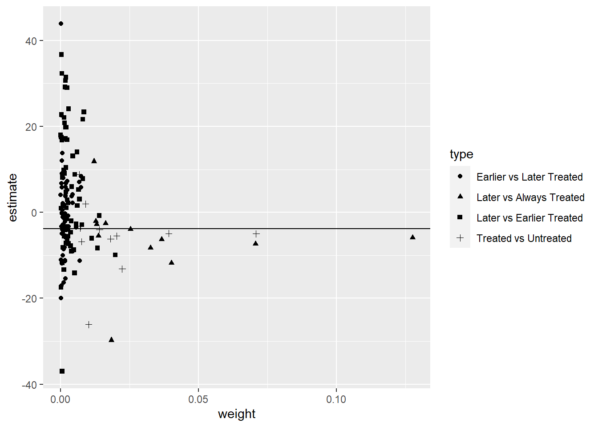
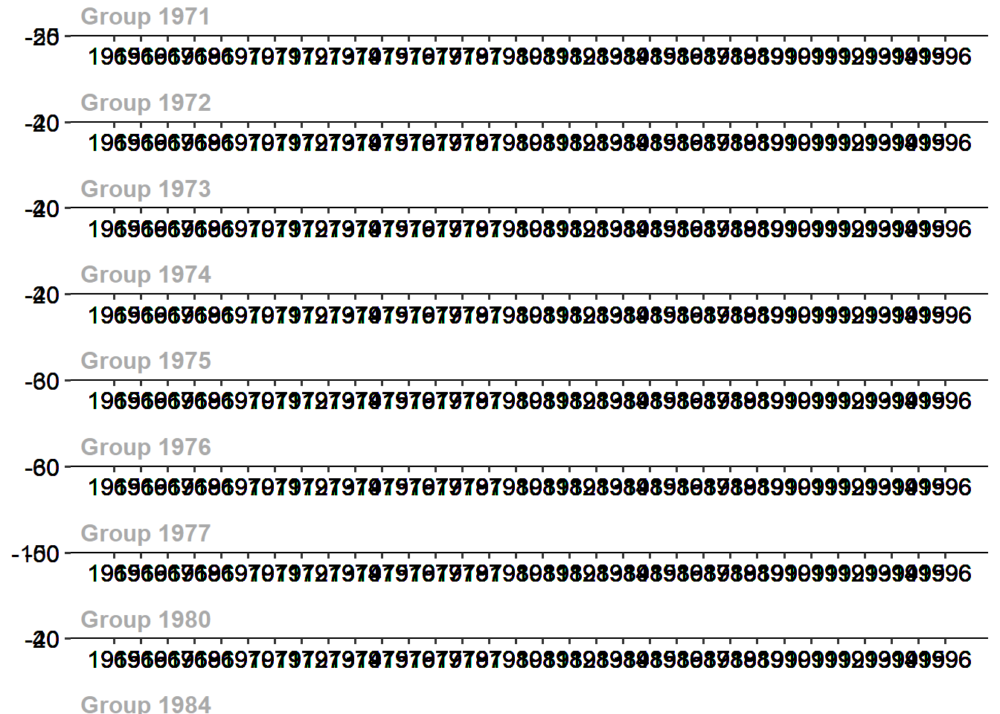
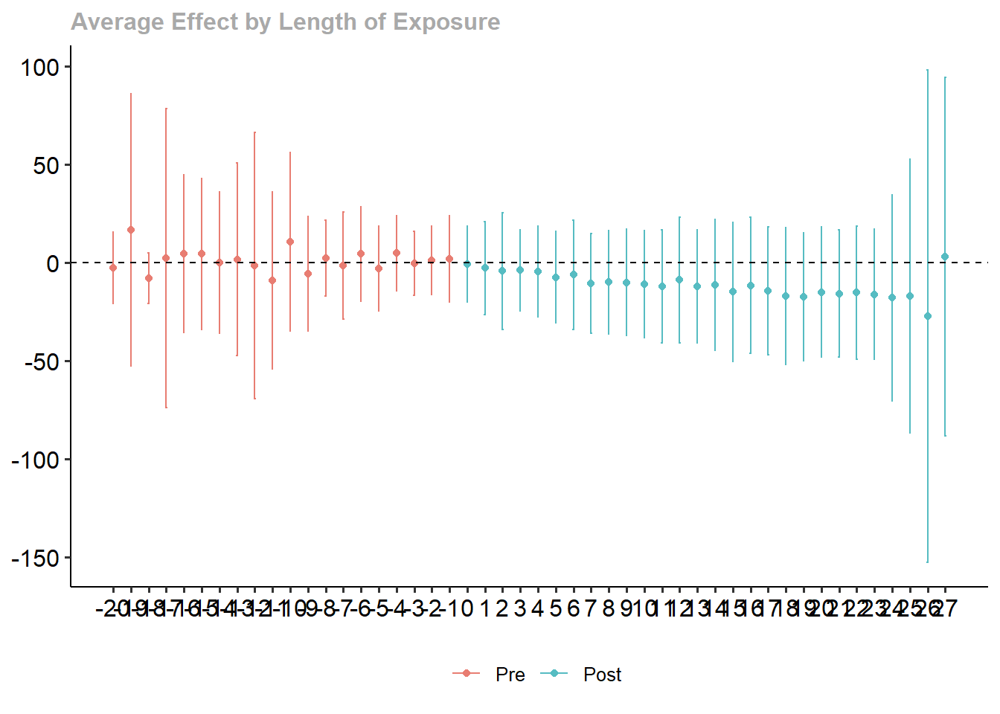
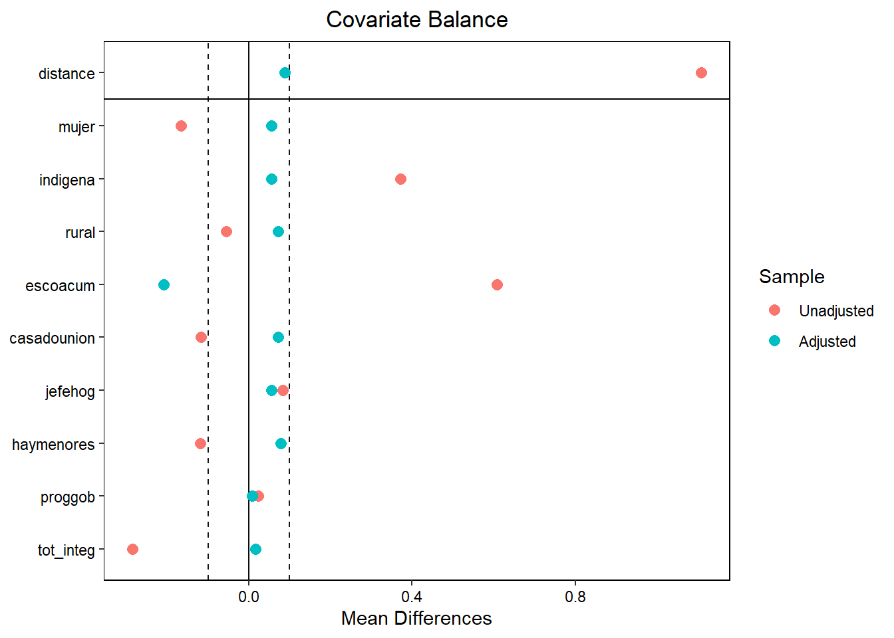

wd <- divorce %>%
filter(year>=1964 & year<=1996 & sex==2) %>%
mutate(suicide_rate=suicide*1000000/(stpop*fshare),
year=as.numeric(year),
divyear = ifelse(divyear>1996, Inf, divyear),
unilateral=ifelse(year>divyear, 1, 0))Tarea 3
Instrucciones
Fecha de entrega: 9 de noviembre a las 20:00
La tarea deberá entregarse en Teams. Deberá incluir dos documentos:
Un primer documento de respuestas donde se incluyan las respuestas a las preguntas teóricas y conceptuales. Este documento debe estar en formato pdf y debe ser generado usando un software de procesamiento de textos científicos, por ejemplo, usando los leguajes LaTeX o Markdown. En este documento también se deben incluir las respuestas a preguntas sobre conclusiones que se desprenden de las secciones prácticas. Por ejemplo, si una pregunta pide obtener la media de la variable x en cierta base de datos, entonces el documento de respuestas debe incluir la pregunta y respuesta correspondiente: “la media de la variable x es 32.6”. En este documento también deberán incluirse las tablas y gráficas que se soliciten.
Un segundo archivo deberá contener el código replicable usado para generar los resultados de la sección práctica. El código debe también crear las tablas y gráficas solicitadas. Los archivos de código se verificarán para comprobar su replicabilidad.
Datos
Preguntas
Pregunta 1
Stevenson, B. & Wolfers, J. (2006)1 estudian los efectos de la introducción de leyes que permiten el divorcio unilateral en los Estados Unidos. La librería bacondecomp incluye los datos usados en dicho artículo (debe instalar y cargar la librería). Usaremos los datos de 1964 a 1996 para mostrar cómo impactan las leyes de divorcio express (unilateral) a la tasa de suicidios en mujeres.
Al correr el pedazo de código anterior, obtendrá un objeto de datos wd en donde la variable de impacto es la tasa de suicidios en mujeres, suicide_rate, st identifica a los estados, year identifica a los años y divyear es el año en que se introdujo la legislación del divorcio unilateral. La última fila del código crea el indicador de tratamiento unilaterial, que toma el valor de 1 para los estados tratados en los periodos post tratamiento.
[5 puntos] ¿Por qué decimos que esta es una aplicación de la estimación de efectos de tratamiento con adopción escalonada?
En esta aplicación, cada estado comienza a ser tratado en indistintos momentos del tiempo. Si hacemos un tabulado de divyear notamos cuántos estados se vuelven tratados en cada año:
table(filter(wd,year==1996)$divyear)1950 1969 1970 1971 1972 1973 1974 1975 1976 1977 1980 1984 1985 Inf 9 2 2 7 3 11 3 2 1 3 1 1 1 5El panel comienza en 1964, para cuando ya 9 estados habían sido tratados. Los estados van siendo tratados hasta que, para el fin del periodo analizado, 1996, solo cinco todavía no habían sido tratados. En esta aplicación, esos cinco estados son los nunca tratados.
[5 puntos] Como punto de partida, estime el efecto del tratamiento sobre suicide_rate usando efectos fijos por estado y año (TWFE) y empleando una librería específica para efectos fijos, como felm. Tome en cuenta la agrupación de los errores. Interprete sus resultados.
Usando felm:
summary(felm(suicide_rate ~ unilateral | st + year | 0 | st, data = wd))Call: felm(formula = suicide_rate ~ unilateral | st + year | 0 | st, data = wd) Residuals: Min 1Q Median 3Q Max -37.517 -6.157 -0.141 5.577 57.004 Coefficients: Estimate Cluster s.e. t value Pr(>|t|) unilateral -3.777 2.201 -1.716 0.0923 . --- Signif. codes: 0 '***' 0.001 '**' 0.01 '*' 0.05 '.' 0.1 ' ' 1 Residual standard error: 10.85 on 1599 degrees of freedom Multiple R-squared(full model): 0.6844 Adjusted R-squared: 0.668 Multiple R-squared(proj model): 0.007963 Adjusted R-squared: -0.04353 F-statistic(full model, *iid*):41.77 on 83 and 1599 DF, p-value: < 2.2e-16 F-statistic(proj model): 2.945 on 1 and 50 DF, p-value: 0.09231[5 puntos] Compruebe que puede obtener el mismo resultado con una regresión lineal usando el paquete lm e incluyendo, además de la variable de tratamiento, dummies de estado y de año.
Estimamos con dummies:
summary(m1 <- lm(suicide_rate ~ unilateral + factor(st) + factor(year), data = wd))$coef[1:2,1:3]Estimate Std. Error t value (Intercept) 56.732642 2.468251 22.984953 unilateral -3.776552 1.054148 -3.582562Luego estimamos errores agrupados:
stargazer(m1, type = 'text', se = list(sqrt(diag(vcovCR(m1, cluster = wd$st, type = 'CR1')))), keep = c("unilateral"))=============================================== Dependent variable: --------------------------- suicide_rate ----------------------------------------------- unilateral -3.777* (2.200) ----------------------------------------------- Observations 1,683 R2 0.684 Adjusted R2 0.668 Residual Std. Error 10.851 (df = 1599) F Statistic 41.770*** (df = 83; 1599) =============================================== Note: *p<0.1; **p<0.05; ***p<0.01Obtenemos los mismos coeficientes. Aquí también podrán volver a comprobar la importancia de usar errores agrupados. Sin agrupar, el error estimado asumiendo independencia es casi menos de la mitad que el estimado con la matriz de varianzas agrupada.
[10 puntos] Realice la descomposición de Goodman-Bacon (2021). Construya un gráfico donde muestre en el eje \(x\) el peso otorgado a cada comparación 2x2 que el estimador de TWFE realiza mecánicamente y en el eje \(y\) el efecto estimado correspondiente a cada comparación. Interprete el gráfico obtenido.
Como vimos en clase:
#Goodman-Bacon decomposition df_bacon <- bacon(suicide_rate ~ unilateral, data = wd, id_var = "st", time_var = "year")type weight avg_est 1 Earlier vs Later Treated 0.11558 0.13489 2 Later vs Always Treated 0.41990 -6.95245 3 Later vs Earlier Treated 0.23125 2.33743 4 Treated vs Untreated 0.23328 -6.05881coef_bacon <- sum(df_bacon$estimate * df_bacon$weight) print(paste("Weighted sum of decomposition =", round(coef_bacon, 4)))[1] "Weighted sum of decomposition = -3.7766"twfe <- felm(suicide_rate ~ unilateral | st + year | 0 | st, data = wd) #Gráfico---- df_bacon %>% ggplot(aes(x=weight, y=estimate, shape=type)) + geom_point() + geom_hline(yintercept = round(twfe$coefficients, 4))
Las comparaciones que más pesan en el estimador de efectos fijos son las de estados tratados con los que siempre estuvieron tratados en el panel, recibiendo dos de esas comparaciones alrededor de 13 y el 7% del peso (los dos triángulos más hacia la derecha). otra comparación que recibe alrededor de 7% del peso es la de los tratados con los nunca tratados (cruz más hacia la derecha). En total, las comparaciones con los estados que iniciaron siendo tratados se llevan el 42% del peso. Las comparaciones entre los tratados tarde y los tratados temprano también reciben un peso alto de 23%.
[10 puntos] Implemente el estimador de Callaway & Sant’Anna (2021) para estimar los efectos del tratamiento específicos para cada cohorte, usando el paquete did. Utilice como grupo de comparación los estados nunca tratados. La columna stid es un identificador numérico de los estados (lo requerirá cuando use att_gt del paquete did).
atts_nyt <- att_gt(yname = "suicide_rate", tname = "year", idname = "stid", gname = "divyear", data = wd, control_group = "nevertreated", est_method = 'reg', bstrap = TRUE, biters = 1000, print_details = FALSE, panel = TRUE) summary(atts_nyt)Call: att_gt(yname = "suicide_rate", tname = "year", idname = "stid", gname = "divyear", data = wd, panel = TRUE, control_group = "nevertreated", bstrap = TRUE, biters = 1000, est_method = "reg", print_details = FALSE) Reference: Callaway, Brantly and Pedro H.C. Sant'Anna. "Difference-in-Differences with Multiple Time Periods." Journal of Econometrics, Vol. 225, No. 2, pp. 200-230, 2021. <https://doi.org/10.1016/j.jeconom.2020.12.001>, <https://arxiv.org/abs/1803.09015> Group-Time Average Treatment Effects: Group Time ATT(g,t) Std. Error [95% Simult. Conf. Band] 1969 1965 -0.2781 6.6356 -17.8542 17.2980 1969 1966 -3.1857 12.1311 -35.3179 28.9465 1969 1967 12.5043 9.0514 -11.4705 36.4791 1969 1968 3.1310 7.6640 -17.1689 23.4309 1969 1969 1.1566 6.4845 -16.0192 18.3325 1969 1970 -3.5412 12.8268 -37.5161 30.4338 1969 1971 -6.7647 9.9727 -33.1797 19.6504 1969 1972 1.7696 11.3396 -28.2660 31.8052 1969 1973 2.7611 7.4443 -16.9570 22.4792 1969 1974 -0.3084 8.3559 -22.4411 21.8242 1969 1975 -0.7421 4.9207 -13.7758 12.2917 1969 1976 -10.6073 7.3884 -30.1772 8.9626 1969 1977 -3.9320 11.3529 -34.0030 26.1391 1969 1978 -14.0099 11.3649 -44.1125 16.0927 1969 1979 -8.1059 14.4050 -46.2611 30.0493 1969 1980 -10.6943 7.3175 -30.0764 8.6879 1969 1981 -3.4755 10.9491 -32.4769 25.5258 1969 1982 -7.0072 8.8546 -30.4609 16.4465 1969 1983 5.1998 11.3700 -24.9166 35.3161 1969 1984 -10.0771 12.8976 -44.2396 24.0854 1969 1985 5.9598 14.9084 -33.5287 45.4482 1969 1986 -8.5962 10.5435 -36.5233 19.3309 1969 1987 -8.6897 7.3241 -28.0894 10.7100 1969 1988 -11.9815 7.8136 -32.6777 8.7147 1969 1989 -5.9781 13.4754 -41.6710 29.7149 1969 1990 -7.7327 10.8247 -36.4046 20.9392 1969 1991 -14.7659 10.6074 -42.8622 13.3304 1969 1992 -6.6956 6.0147 -22.6269 9.2357 1969 1993 0.5290 11.0750 -28.8059 29.8638 1969 1994 -6.1575 15.5254 -47.2803 34.9653 1969 1995 -6.7870 15.8578 -48.7903 35.2163 1969 1996 3.0338 13.0328 -31.4867 37.5543 1970 1965 3.9098 3.3328 -4.9179 12.7374 1970 1966 -5.7213 10.7298 -34.1417 22.6991 1970 1967 10.0224 8.7761 -13.2232 33.2680 1970 1968 -5.3764 9.3697 -30.1943 19.4416 1970 1969 10.5202 5.3818 -3.7348 24.7751 1970 1970 5.6377 6.5355 -11.6730 22.9485 1970 1971 1.3987 5.0554 -11.9917 14.7891 1970 1972 1.3331 9.6135 -24.1307 26.7968 1970 1973 -13.0254 4.2642 -24.3203 -1.7305 * 1970 1974 -12.7744 4.8529 -25.6286 0.0798 1970 1975 -15.3434 5.0838 -28.8092 -1.8776 * 1970 1976 -19.8605 4.1529 -30.8605 -8.8605 * 1970 1977 -19.5551 5.7515 -34.7894 -4.3208 * 1970 1978 -33.3382 10.9449 -62.3284 -4.3480 * 1970 1979 -30.5087 13.5293 -66.3444 5.3269 1970 1980 -44.6366 12.1998 -76.9508 -12.3225 * 1970 1981 -34.0557 11.5786 -64.7246 -3.3868 * 1970 1982 -38.7875 10.3941 -66.3190 -11.2561 * 1970 1983 -32.9234 18.0135 -80.6367 14.7898 1970 1984 -34.0625 20.3399 -87.9376 19.8126 1970 1985 -30.6346 20.4927 -84.9146 23.6453 1970 1986 -37.0754 20.5026 -91.3817 17.2308 1970 1987 -37.6630 23.7827 -100.6574 25.3313 1970 1988 -43.0563 22.4801 -102.6005 16.4878 1970 1989 -45.1314 19.4328 -96.6040 6.3412 1970 1990 -43.1765 21.3856 -99.8215 13.4685 1970 1991 -49.9116 21.0601 -105.6945 5.8713 1970 1992 -50.9515 18.3520 -99.5612 -2.3418 * 1970 1993 -44.5526 22.7487 -104.8082 15.7030 1970 1994 -51.5405 17.9644 -99.1236 -3.9575 * 1970 1995 -48.4108 23.2478 -109.9883 13.1667 1970 1996 -48.0618 22.1160 -106.6415 10.5179 1971 1965 -0.3060 3.7358 -10.2012 9.5892 1971 1966 -12.4375 10.6622 -40.6788 15.8039 1971 1967 17.0967 9.0818 -6.9587 41.1522 1971 1968 2.6186 7.8112 -18.0713 23.3086 1971 1969 -2.1268 5.6176 -17.0063 12.7526 1971 1970 5.7625 7.2185 -13.3575 24.8824 1971 1971 -9.3866 6.9522 -27.8012 9.0279 1971 1972 -13.8393 7.3623 -33.3401 5.6614 1971 1973 -12.4602 8.7001 -35.5046 10.5842 1971 1974 0.1729 5.2896 -13.8379 14.1837 1971 1975 -8.8785 8.2836 -30.8197 13.0626 1971 1976 -7.7923 5.9244 -23.4845 7.8999 1971 1977 -6.3192 8.2488 -28.1682 15.5299 1971 1978 -17.4985 10.7186 -45.8893 10.8923 1971 1979 -16.1999 5.8570 -31.7136 -0.6861 * 1971 1980 -22.5395 5.8819 -38.1192 -6.9598 * 1971 1981 -12.5894 7.7023 -32.9909 7.8121 1971 1982 -20.6385 10.8322 -49.3303 8.0532 1971 1983 -11.0888 5.5598 -25.8155 3.6378 1971 1984 -12.7478 5.9540 -28.5184 3.0228 1971 1985 -9.3683 8.4166 -31.6616 12.9251 1971 1986 -16.9260 7.5061 -36.8077 2.9558 1971 1987 -12.9962 11.2953 -42.9146 16.9222 1971 1988 -14.6487 8.5811 -37.3779 8.0804 1971 1989 -18.7126 8.5443 -41.3443 3.9192 1971 1990 -17.6198 6.3856 -34.5337 -0.7058 * 1971 1991 -17.2789 8.8765 -40.7903 6.2326 1971 1992 -22.1825 9.9348 -48.4971 4.1322 1971 1993 -9.1278 9.2349 -33.5887 15.3331 1971 1994 -13.7091 8.8034 -37.0272 9.6090 1971 1995 -15.3270 7.4933 -35.1750 4.5209 1971 1996 -11.2124 9.1156 -35.3573 12.9325 1972 1965 3.3603 2.4626 -3.1625 9.8830 1972 1966 -5.2709 11.5961 -35.9861 25.4444 1972 1967 8.3599 9.4505 -16.6722 33.3920 1972 1968 5.3444 8.1315 -16.1938 26.8826 1972 1969 -6.1540 5.3564 -20.3416 8.0337 1972 1970 5.3754 5.7868 -9.9522 20.7031 1972 1971 -0.7708 5.8867 -16.3632 14.8217 1972 1972 -5.3078 5.3296 -19.4245 8.8089 1972 1973 -7.1261 9.2430 -31.6086 17.3563 1972 1974 -4.3635 5.6802 -19.4088 10.6818 1972 1975 -10.7104 6.8305 -28.8027 7.3819 1972 1976 -8.5659 8.6562 -31.4940 14.3621 1972 1977 -1.7264 4.1311 -12.6687 9.2159 1972 1978 -19.5471 7.5119 -39.4441 0.3500 1972 1979 -9.7870 9.5963 -35.2052 15.6312 1972 1980 -16.4149 5.8004 -31.7788 -1.0511 * 1972 1981 -4.6831 4.7735 -17.3269 7.9607 1972 1982 -9.8129 8.7961 -33.1114 13.4856 1972 1983 -5.7570 7.1340 -24.6531 13.1391 1972 1984 -11.1817 6.2676 -27.7830 5.4195 1972 1985 -8.5492 8.1943 -30.2538 13.1554 1972 1986 -3.2909 6.0279 -19.2573 12.6756 1972 1987 -14.5853 7.4293 -34.2636 5.0930 1972 1988 -12.6795 6.2288 -29.1780 3.8190 1972 1989 -10.9845 7.1151 -29.8307 7.8617 1972 1990 -7.7794 7.0239 -26.3840 10.8251 1972 1991 -13.7033 5.1100 -27.2383 -0.1682 * 1972 1992 -11.0100 8.6922 -34.0334 12.0135 1972 1993 -17.3770 6.9129 -35.6874 0.9334 1972 1994 -16.6543 8.1498 -38.2410 4.9323 1972 1995 -16.0626 6.6801 -33.7565 1.6312 1972 1996 -13.6292 5.2798 -27.6140 0.3557 1973 1965 0.3154 3.5529 -9.0953 9.7260 1973 1966 -10.0893 10.3950 -37.6231 17.4445 1973 1967 16.0570 9.2287 -8.3874 40.5015 1973 1968 -4.8486 8.0338 -26.1282 16.4309 1973 1969 3.3129 5.6136 -11.5560 18.1817 1973 1970 5.5555 7.0898 -13.2237 24.3347 1973 1971 -2.0683 7.5847 -22.1582 18.0216 1973 1972 -0.9275 6.6453 -18.5293 16.6742 1973 1973 4.4106 8.4273 -17.9112 26.7324 1973 1974 3.2944 6.2254 -13.1952 19.7839 1973 1975 0.0725 11.9419 -31.5584 31.7035 1973 1976 -1.1180 6.6312 -18.6823 16.4464 1973 1977 2.7203 6.0285 -13.2476 18.6882 1973 1978 -10.3862 9.2691 -34.9376 14.1652 1973 1979 -3.4722 7.8788 -24.3410 17.3967 1973 1980 -11.7465 7.7454 -32.2621 8.7690 1973 1981 -3.1322 7.8234 -23.8546 17.5901 1973 1982 -7.8264 11.3381 -37.8582 22.2054 1973 1983 -4.3281 6.6132 -21.8448 13.1886 1973 1984 -10.3847 7.3210 -29.7761 9.0067 1973 1985 -3.3503 7.3688 -22.8685 16.1678 1973 1986 -9.9416 5.0384 -23.2871 3.4039 1973 1987 -10.5611 9.4580 -35.6130 14.4908 1973 1988 -13.3770 9.8334 -39.4232 12.6692 1973 1989 -9.7072 7.5201 -29.6259 10.2115 1973 1990 -12.5464 6.6879 -30.2610 5.1681 1973 1991 -15.9396 8.0317 -37.2136 5.3344 1973 1992 -17.9985 7.5682 -38.0447 2.0477 1973 1993 -13.8426 9.1166 -37.9902 10.3050 1973 1994 -9.0985 6.2666 -25.6972 7.5003 1973 1995 -12.4104 4.1561 -23.4189 -1.4020 * 1973 1996 -14.4985 6.1312 -30.7384 1.7414 1974 1965 -1.7117 5.2308 -15.5667 12.1434 1974 1966 -3.7313 11.4737 -34.1223 26.6596 1974 1967 9.6967 9.0514 -14.2781 33.6715 1974 1968 -5.6736 7.8695 -26.5178 15.1707 1974 1969 4.7497 5.2190 -9.0742 18.5736 1974 1970 8.9528 6.0552 -7.0859 24.9915 1974 1971 -8.1562 5.9676 -23.9629 7.6505 1974 1972 5.1631 4.4094 -6.5163 16.8425 1974 1973 -4.1358 7.2144 -23.2449 14.9733 1974 1974 -1.5277 3.8555 -11.7399 8.6846 1974 1975 -0.2490 4.8890 -13.1987 12.7007 1974 1976 -4.6623 4.2713 -15.9759 6.6513 1974 1977 -3.6545 7.0379 -22.2961 14.9872 1974 1978 -9.4996 5.3380 -23.6385 4.6393 1974 1979 -1.7953 9.8155 -27.7940 24.2034 1974 1980 -10.9157 4.9094 -23.9193 2.0879 1974 1981 -2.9438 7.1709 -21.9375 16.0500 1974 1982 -6.1358 5.7418 -21.3445 9.0729 1974 1983 -2.2347 7.3695 -21.7546 17.2853 1974 1984 -7.2784 6.3559 -24.1136 9.5569 1974 1985 0.9048 10.4022 -26.6480 28.4577 1974 1986 -3.4953 8.4031 -25.7529 18.7623 1974 1987 -9.3045 8.4189 -31.6041 12.9951 1974 1988 -9.0434 8.2537 -30.9053 12.8184 1974 1989 -6.4758 9.6869 -32.1340 19.1824 1974 1990 -7.6369 7.7738 -28.2277 12.9538 1974 1991 -14.7133 7.5175 -34.6253 5.1986 1974 1992 -14.7711 7.6625 -35.0670 5.5249 1974 1993 -11.2274 8.3720 -33.4028 10.9479 1974 1994 -14.4350 9.8745 -40.5899 11.7199 1974 1995 -13.4194 9.2377 -37.8876 11.0489 1974 1996 -14.8017 9.4145 -39.7383 10.1350 1975 1965 19.2544 13.8001 -17.2985 55.8073 1975 1966 -10.7092 10.8164 -39.3590 17.9406 1975 1967 9.6526 9.0235 -14.2483 33.5534 1975 1968 5.2146 8.8920 -18.3379 28.7672 1975 1969 -2.1343 8.2758 -24.0548 19.7862 1975 1970 -5.6035 9.7217 -31.3537 20.1467 1975 1971 3.4917 9.3021 -21.1473 28.1307 1975 1972 -15.0108 8.0493 -36.3314 6.3098 1975 1973 9.7321 7.5087 -10.1566 29.6208 1975 1974 0.5633 5.7371 -14.6328 15.7593 1975 1975 -4.9361 7.0390 -23.5807 13.7084 1975 1976 -1.1020 4.3675 -12.6704 10.4664 1975 1977 -4.3766 8.6024 -27.1621 18.4089 1975 1978 -8.3191 7.5152 -28.2250 11.5867 1975 1979 -12.7262 14.1017 -50.0780 24.6257 1975 1980 -12.3662 5.2244 -26.2042 1.4719 1975 1981 -7.7023 6.4755 -24.8542 9.4495 1975 1982 -9.7198 9.1791 -34.0328 14.5932 1975 1983 -7.3926 5.9008 -23.0223 8.2371 1975 1984 8.8507 5.6226 -6.0423 23.7436 1975 1985 -5.6163 8.3116 -27.6317 16.3991 1975 1986 -5.2183 4.5772 -17.3423 6.9056 1975 1987 -0.8638 5.9079 -16.5123 14.7847 1975 1988 -15.3668 11.0217 -44.5603 13.8268 1975 1989 -5.4933 5.8172 -20.9017 9.9151 1975 1990 8.5067 5.6803 -6.5391 23.5524 1975 1991 0.7631 6.1256 -15.4621 16.9883 1975 1992 -4.2255 6.5854 -21.6686 13.2176 1975 1993 1.1200 2.6176 -5.8134 8.0534 1975 1994 -8.3655 7.6252 -28.5628 11.8318 1975 1995 1.8041 4.3171 -9.6308 13.2390 1975 1996 -6.9207 5.3540 -21.1022 7.2608 1976 1965 -9.2525 2.4129 -15.6436 -2.8615 * 1976 1966 -7.3839 10.8164 -36.0337 21.2659 1976 1967 6.1953 9.0514 -17.7795 30.1701 1976 1968 -3.4100 7.6537 -23.6828 16.8628 1976 1969 -4.5734 5.3509 -18.7466 9.5997 1976 1970 13.6356 5.7737 -1.6574 28.9285 1976 1971 2.1590 5.9676 -13.6477 17.9657 1976 1972 -1.4512 4.0247 -12.1115 9.2091 1976 1973 -23.5440 6.4022 -40.5017 -6.5863 * 1976 1974 37.6970 3.7016 27.8924 47.5016 * 1976 1975 -5.8620 9.0069 -29.7190 17.9950 1976 1976 7.3375 6.7834 -10.6299 25.3049 1976 1977 35.4928 7.3478 16.0305 54.9551 * 1976 1978 -2.2158 3.3728 -11.1493 6.7178 1976 1979 2.7599 11.5757 -27.9011 33.4210 1976 1980 -10.1277 5.1657 -23.8105 3.5550 1976 1981 -9.1249 7.6546 -29.4001 11.1503 1976 1982 -9.7529 5.2585 -23.6815 4.1756 1976 1983 -12.2793 9.8103 -38.2643 13.7056 1976 1984 -20.1148 7.4221 -39.7740 -0.4556 * 1976 1985 -0.2053 16.2410 -43.2237 42.8131 1976 1986 -27.7992 8.4682 -50.2293 -5.3691 * 1976 1987 -9.9985 4.4562 -21.8017 1.8048 1976 1988 -22.8540 6.0525 -38.8857 -6.8224 * 1976 1989 -14.3020 6.3277 -31.0624 2.4584 1976 1990 -16.7275 5.9040 -32.3657 -1.0893 * 1976 1991 -29.9838 5.5425 -44.6645 -15.3032 * 1976 1992 -35.9431 6.2168 -52.4097 -19.4764 * 1976 1993 -33.5630 6.7582 -51.4637 -15.6623 * 1976 1994 -19.1785 13.9477 -56.1226 17.7655 1976 1995 -18.8943 9.7949 -44.8386 7.0500 1976 1996 -20.0712 8.0000 -41.2611 1.1187 1977 1965 7.9420 11.4509 -22.3884 38.2724 1977 1966 -17.8103 11.7712 -48.9893 13.3688 1977 1967 22.0500 8.9252 -1.5906 45.6905 1977 1968 -12.0551 12.2063 -44.3866 20.2764 1977 1969 11.3299 11.8118 -19.9564 42.6163 1977 1970 7.9543 8.0043 -13.2472 29.1558 1977 1971 0.9514 9.6620 -24.6408 26.5437 1977 1972 -1.0798 9.7976 -27.0312 24.8716 1977 1973 -2.0153 9.2988 -26.6454 22.6148 1977 1974 -10.4409 5.7006 -25.5402 4.6584 1977 1975 -2.6782 7.4014 -22.2827 16.9263 1977 1976 7.5869 17.8595 -39.7184 54.8921 1977 1977 -0.3083 15.0917 -40.2824 39.6659 1977 1978 -18.5991 15.9720 -60.9047 23.7066 1977 1979 -8.3001 26.8733 -79.4806 62.8804 1977 1980 -13.4381 23.2817 -75.1054 48.2292 1977 1981 -12.1467 21.0883 -68.0043 43.7108 1977 1982 -17.4639 16.5331 -61.2559 26.3281 1977 1983 6.1362 29.3924 -71.7167 83.9891 1977 1984 -2.9191 23.2246 -64.4352 58.5970 1977 1985 -14.8995 19.8837 -67.5664 37.7673 1977 1986 -12.3230 14.4301 -50.5448 25.8988 1977 1987 -23.6769 25.5092 -91.2442 43.8904 1977 1988 -25.5547 21.1120 -81.4750 30.3656 1977 1989 -9.2602 29.8080 -88.2140 69.6935 1977 1990 -13.7369 28.6830 -89.7110 62.2372 1977 1991 -25.9731 24.0676 -89.7221 37.7758 1977 1992 -29.9220 21.9485 -88.0580 28.2140 1977 1993 -14.9531 26.1868 -84.3153 54.4092 1977 1994 -11.6033 33.1464 -99.3998 76.1931 1977 1995 -29.0098 20.3258 -82.8476 24.8280 1977 1996 -16.0590 22.1479 -74.7230 42.6050 1980 1965 -3.1314 2.4129 -9.5224 3.2597 1980 1966 -9.4644 10.8164 -38.1142 19.1853 1980 1967 12.2092 9.0514 -11.7656 36.1840 1980 1968 3.0528 7.6537 -17.2200 23.3256 1980 1969 -3.6543 5.3509 -17.8275 10.5188 1980 1970 12.7725 5.7737 -2.5204 28.0655 1980 1971 -11.0126 5.9676 -26.8193 4.7941 1980 1972 5.2094 4.0247 -5.4509 15.8697 1980 1973 -8.0378 6.4022 -24.9955 8.9199 1980 1974 2.0132 3.7016 -7.7914 11.8178 1980 1975 -3.8913 9.0069 -27.7483 19.9656 1980 1976 4.9514 6.7834 -13.0161 22.9188 1980 1977 -1.8244 3.7163 -11.6678 8.0191 1980 1978 -6.3410 7.7499 -26.8686 14.1867 1980 1979 5.7875 11.5127 -24.7068 36.2818 1980 1980 -12.0465 6.3517 -28.8705 4.7775 1980 1981 -7.2766 3.4559 -16.4304 1.8772 1980 1982 -7.7888 13.7039 -44.0869 28.5094 1980 1983 3.8986 3.7649 -6.0737 13.8709 1980 1984 -2.3172 6.3267 -19.0751 14.4406 1980 1985 4.4467 5.1164 -9.1053 17.9986 1980 1986 -9.5981 7.0565 -28.2889 9.0927 1980 1987 -10.0537 11.3335 -40.0733 19.9659 1980 1988 -10.9789 9.1300 -35.1619 13.2041 1980 1989 -6.9527 5.9212 -22.6364 8.7311 1980 1990 -5.3312 5.6717 -20.3541 9.6917 1980 1991 -8.8820 8.4870 -31.3619 13.5978 1980 1992 -12.0023 9.9672 -38.4028 14.3982 1980 1993 -8.3192 7.7315 -28.7978 12.1595 1980 1994 -12.5474 7.1011 -31.3565 6.2617 1980 1995 -6.7308 8.7926 -30.0201 16.5586 1980 1996 -9.1678 7.0565 -27.8588 9.5231 1984 1965 3.7550 2.4129 -2.6360 10.1461 1984 1966 -9.0520 10.8164 -37.7018 19.5978 1984 1967 10.1591 9.0514 -13.8157 34.1339 1984 1968 -3.1247 7.6537 -23.3975 17.1481 1984 1969 4.0091 5.3509 -10.1640 18.1823 1984 1970 4.9470 5.7737 -10.3459 20.2400 1984 1971 -12.3840 5.9676 -28.1907 3.4227 1984 1972 5.1482 4.0247 -5.5121 15.8085 1984 1973 -6.4124 6.4022 -23.3701 10.5453 1984 1974 -5.7358 3.7016 -15.5404 4.0688 1984 1975 -4.0919 9.0069 -27.9488 19.7651 1984 1976 8.7209 6.7834 -9.2465 26.6883 1984 1977 2.6679 3.7163 -7.1756 12.5113 1984 1978 -7.3955 7.7499 -27.9232 13.1321 1984 1979 2.2253 11.5127 -28.2691 32.7196 1984 1980 -8.3661 6.3517 -25.1901 8.4579 1984 1981 10.0008 5.5695 -4.7514 24.7529 1984 1982 -3.2324 10.2480 -30.3767 23.9119 1984 1983 11.0979 10.4009 -16.4513 38.6471 1984 1984 -1.6979 2.9530 -9.5196 6.1239 1984 1985 4.0744 6.4308 -12.9590 21.1078 1984 1986 -8.0341 2.9094 -15.7404 -0.3278 * 1984 1987 -10.4189 8.0305 -31.6896 10.8518 1984 1988 -7.8277 5.8269 -23.2617 7.6064 1984 1989 -9.2894 4.2698 -20.5990 2.0203 1984 1990 -6.2529 2.9419 -14.0454 1.5395 1984 1991 -10.1584 5.2819 -24.1489 3.8321 1984 1992 -11.4694 6.6641 -29.1210 6.1822 1984 1993 -9.2844 3.9688 -19.7968 1.2280 1984 1994 -14.6630 5.2893 -28.6730 -0.6530 * 1984 1995 -12.5044 3.7261 -22.3739 -2.6350 * 1984 1996 -10.2449 3.2720 -18.9116 -1.5781 * 1985 1965 -2.7099 2.4129 -9.1009 3.6812 1985 1966 29.3180 10.8164 0.6683 57.9678 * 1985 1967 -6.8558 9.0514 -30.8306 17.1190 1985 1968 -5.9545 7.6537 -26.2273 14.3183 1985 1969 12.1675 5.3509 -2.0056 26.3407 1985 1970 12.3074 5.7737 -2.9856 27.6004 1985 1971 4.9424 5.9676 -10.8643 20.7491 1985 1972 5.1718 4.0247 -5.4885 15.8321 1985 1973 -41.2443 6.4022 -58.2020 -24.2866 * 1985 1974 9.0064 3.7016 -0.7982 18.8111 1985 1975 -9.1424 9.0069 -32.9993 14.7146 1985 1976 2.8125 6.7834 -15.1549 20.7799 1985 1977 -2.1400 3.7163 -11.9834 7.7035 1985 1978 5.7781 7.7499 -14.7495 26.3058 1985 1979 -3.8368 11.5127 -34.3311 26.6576 1985 1980 1.5265 6.3517 -15.2975 18.3505 1985 1981 -2.8105 5.5695 -17.5626 11.9416 1985 1982 13.2242 10.2480 -13.9201 40.3685 1985 1983 -5.5714 10.4009 -33.1206 21.9778 1985 1984 -5.5493 2.9530 -13.3711 2.2724 1985 1985 11.4728 8.5549 -11.1868 34.1325 1985 1986 10.1715 3.4372 1.0672 19.2759 * 1985 1987 17.5291 5.0068 4.2674 30.7909 * 1985 1988 -9.6423 4.1182 -20.5504 1.2659 1985 1989 19.8229 5.3527 5.6449 34.0008 * 1985 1990 26.2350 1.7402 21.6255 30.8444 * 1985 1991 6.2209 3.7879 -3.8123 16.2541 1985 1992 18.3602 5.5364 3.6957 33.0246 * 1985 1993 23.0343 2.8585 15.4630 30.6056 * 1985 1994 15.2612 6.3705 -1.6127 32.1351 1985 1995 15.4633 4.6990 3.0169 27.9098 * 1985 1996 26.5282 3.9405 16.0909 36.9656 * --- Signif. codes: `*' confidence band does not cover 0 Control Group: Never Treated, Anticipation Periods: 0 Estimation Method: Outcome Regressionggdid(atts_nyt)
[10 puntos] Reporte los resultados agregados obtenidos a partir del estimador Callaway & Sant’Anna (2021), usando una agregación dinámica que muestre los efectos promedio para cada periodo antes y después del tratamiento. Grafique los resultados.
Graficamos:
agg.es <- aggte(atts_nyt, type = "dynamic") summary(agg.es)Call: aggte(MP = atts_nyt, type = "dynamic") Reference: Callaway, Brantly and Pedro H.C. Sant'Anna. "Difference-in-Differences with Multiple Time Periods." Journal of Econometrics, Vol. 225, No. 2, pp. 200-230, 2021. <https://doi.org/10.1016/j.jeconom.2020.12.001>, <https://arxiv.org/abs/1803.09015> Overall summary of ATT's based on event-study/dynamic aggregation: ATT Std. Error [ 95% Conf. Int.] -11.1957 3.6923 -18.4325 -3.9588 * Dynamic Effects: Event time Estimate Std. Error [95% Simult. Conf. Band] -20 -2.7099 2.5607 -20.8874 15.4676 -19 16.5365 9.7678 -52.8018 85.8749 -18 -7.9539 1.7929 -20.6811 4.7733 -17 2.1023 10.7240 -74.0235 78.2281 -16 4.5214 5.6681 -35.7143 44.7571 -15 4.3951 5.4277 -34.1345 42.9246 -14 0.1417 5.0697 -35.8466 36.1299 -13 1.6657 6.9074 -47.3672 50.6986 -12 -1.5362 9.5673 -69.4513 66.3788 -11 -9.1062 6.3401 -54.1124 35.9000 -10 10.5744 6.3973 -34.8378 55.9865 -9 -5.7346 4.1004 -34.8420 23.3728 -8 2.3457 2.7318 -17.0468 21.7381 -7 -1.6033 3.8467 -28.9095 25.7030 -6 4.3835 3.3968 -19.7296 28.4965 -5 -3.0193 3.0246 -24.4897 18.4511 -4 4.8722 2.6914 -14.2332 23.9777 -3 -0.3596 2.2864 -16.5896 15.8704 -2 1.1409 2.4546 -16.2831 18.5649 -1 1.9481 3.0879 -19.9719 23.8680 0 -0.8065 2.7082 -20.0310 18.4181 1 -2.7726 3.3196 -26.3375 20.7923 2 -4.2845 4.1920 -34.0419 25.4729 3 -3.9743 2.9013 -24.5693 16.6207 4 -4.5620 3.2705 -27.7782 18.6543 5 -7.4465 3.2913 -30.8099 15.9169 6 -6.2541 3.9247 -34.1143 21.6062 7 -10.6094 3.5938 -36.1208 14.9020 8 -9.9746 3.7053 -36.2775 16.3283 9 -10.1110 3.8127 -37.1757 16.9538 10 -11.0023 3.8319 -38.2040 16.1993 11 -12.2896 4.0485 -41.0282 16.4490 12 -8.8234 4.5172 -40.8891 23.2423 13 -12.1880 4.0512 -40.9457 16.5697 14 -11.2760 4.6872 -44.5491 21.9971 15 -14.8487 4.9790 -50.1931 20.4958 16 -11.6965 4.8760 -46.3093 22.9163 17 -14.3232 4.5809 -46.8417 18.1953 18 -17.1010 4.8865 -51.7886 17.5866 19 -17.4748 4.5886 -50.0473 15.0978 20 -14.9783 4.6764 -48.1741 18.2175 21 -15.8960 4.5572 -48.2457 16.4537 22 -15.2219 4.7658 -49.0524 18.6087 23 -16.2453 4.6722 -49.4119 16.9214 24 -17.8714 7.3941 -70.3594 34.6165 25 -17.0567 9.8065 -86.6695 52.5561 26 -27.4244 17.6481 -152.7019 97.8531 27 3.0338 12.8604 -88.2575 94.3252 --- Signif. codes: `*' confidence band does not cover 0 Control Group: Never Treated, Anticipation Periods: 0 Estimation Method: Outcome Regressionggdid(agg.es)
[5 puntos] ¿Cuáles son las ventajas del estimador de Callaway & Sant’Anna (2021) respecto al estimador de TWFE?
Pregunta 2
La ENIGH 2020 incluyó un módulo para la evaluación del Programa Jóvenes Construyendo el futuro. Se buscó que la cobertura de la encuesta pudiera incluir suficientes participantes del programa para poder compararlos con los no participantes. Los datos en datos_jcf_analisis.csv fueron construidos a partir de dicha encuesta. En este ejercicio estimaremos el efecto de participar en el programa sobre el ingreso trimestral, ingtot_tri, usando métodos de matching.
Las siguientes variables están incluidas en el archivo de datos: mujer (dummy de sexo), indigena (dummy de pertenencia a una etnia), rural (dummy del ámbito rural), escoacum (años de escolaridad), casadounion (dummy para casados o en unión libre), jefehog (dummy para jefes del hogar), haymenores (dummy para la presencia de menores de edad en el hogar), proggob (dummy para beneficiarios de programas de gobierno), y tot_integ (número de miembros del hogar). También se incluye la clave de las entidades, cve_ent.
[5 puntos] Considere la comparación para el ingreso trimestral, ingtot_tri, entre beneficiarios y su grupo de comparación, que serán los jóvenes que no asisten a la escuela y no están empleados. Los beneficiarios tienen jcf2==1 y los jóvenes que no asisten a la escuela y no están empleados tienen jcf2==0. Muestra qué tan similares o qué tan diferentes son los individuos en ambos grupos en términos de las características indicadas anteriormente y del ingreso trimestral.
Estadística descriptiva:
data.jcf <- read_csv("C:/Users/rojas/Dropbox/Evaluación de Programas Sociales/2023/tareas/datos_jcf_analisis.csv") set.seed(1023)datasummary(ingtot_tri + mujer + indigena + rural + escoacum + casadounion + jefehog + haymenores + proggob + tot_integ ~ factor(jcf2) * (mean + sd) * Arguments(na.rm=TRUE), fmt = "%.2f", data = data.jcf)mean sd mean sd ingtot_tri 1510.36 8478.60 9643.06 6632.56 mujer 0.76 0.43 0.59 0.49 indigena 0.22 0.41 0.59 0.49 rural 0.40 0.49 0.35 0.48 escoacum 10.39 3.23 12.03 2.70 casadounion 0.53 0.50 0.41 0.49 jefehog 0.06 0.23 0.14 0.35 haymenores 0.66 0.47 0.54 0.50 proggob 0.19 0.39 0.21 0.41 tot_integ 4.82 1.97 4.25 2.00 Claramente los individuos que participan en el programa son diferentes a los que no. En el programa hay una proporción menor de mujeres que en el grupo no tratado; en el grupo tratado hay un nivel mayor de escolaridad acumulada; y los individuos del grupo tratado viven en hogares más pequeños que los del grupo no tratado. Entre muchas otras diferencias.
El problema entonces es que existen factores que influyen en la probabilidad de recibir el tratamiento y en el ingreso, por lo que una comparación simple de individuos tratados y no tratados confundirá el efecto del tratamiento.
[5 puntos] Estime el TOT (TT o ATT) del programa en el ingreso trimestral, ingtot_tri usando el algoritmo de vecino más cercano. Para estimar el impacto en el ingreso trimestral se comparan a los beneficiarios de JCF con los jóvenes que no asisten a la escuela y no están empleados. Los beneficiarios tienen jcf2==1 y los jóvenes que no asisten a la escuela y no están empleados tienen jcf2==0. Escoja la especificación del propensity score que más le parezca adecuada. Realice la inferencia estadística con errores agrupados a nivel grupo de emparejamiento. ¿De qué tamaño es el TOT estimado y es este efecto estadísticamente significativo?
sub.data <- data.jcf %>% dplyr::select(ingtot_tri, jcf2, mujer, indigena, cve_ent, rural, escoacum, casadounion, jefehog, haymenores, proggob, tot_integ, factor.x) sub.data <- sub.data[complete.cases(sub.data), ] m.out.a <- matchit(formula=jcf2 ~ mujer + indigena + factor(cve_ent) + rural + escoacum + casadounion + jefehog + haymenores + proggob + tot_integ, method = "nearest", distance= "glm", replace = FALSE, data = sub.data)Estimamos el efecto del tratamiento:
tt1 <- lm(ingtot_tri ~ jcf2, data = match.data(m.out.a)) #Errores agrupados a nivel subclass coeftest(tt1, vcov. = vcovCL, cluster = ~subclass)t test of coefficients: Estimate Std. Error t value Pr(>|t|) (Intercept) 1669.95 407.99 4.0931 5.735e-05 *** jcf2 7973.11 708.27 11.2572 < 2.2e-16 *** --- Signif. codes: 0 '***' 0.001 '**' 0.01 '*' 0.05 '.' 0.1 ' ' 1Se estima un efecto de 7830 pesos adicionales de ingreso trimestral para los participantes en el programa.
[5 puntos] En el matching de la parte b., evalúe qué tan bueno es el procedimiento en balancear las características observadas una vez realizado el matching. Cree un love plot para evaluar qué tan bueno es el procedimiento de matching para obtener una muestra balanceada.
bal.tab del paquete cobalt nos permite ver un resumen del balance:
#Con esto elimino las dummies de estado de la salida bal.tab(m.out.a, m.threshold=0.1, un=T)Balance Measures Type Diff.Un Diff.Adj M.Threshold distance Distance 1.1091 0.0881 Balanced, <0.1 mujer Binary -0.1660 0.0551 Balanced, <0.1 indigena Binary 0.3714 0.0551 Balanced, <0.1 factor(cve_ent)_01 Binary -0.1720 -0.0157 Balanced, <0.1 factor(cve_ent)_02 Binary -0.3428 -0.0079 Balanced, <0.1 factor(cve_ent)_03 Binary 0.0168 0.0079 Balanced, <0.1 factor(cve_ent)_04 Binary 0.5524 0.0157 Balanced, <0.1 factor(cve_ent)_05 Binary -0.0544 0.0000 Balanced, <0.1 rural Binary -0.0553 0.0709 Balanced, <0.1 escoacum Contin. 0.6086 -0.2096 Not Balanced, >0.1 casadounion Binary -0.1170 0.0709 Balanced, <0.1 jefehog Binary 0.0831 0.0551 Balanced, <0.1 haymenores Binary -0.1193 0.0787 Balanced, <0.1 proggob Binary 0.0220 0.0079 Balanced, <0.1 tot_integ Contin. -0.2856 0.0158 Balanced, <0.1 Balance tally for mean differences count Balanced, <0.1 14 Not Balanced, >0.1 1 Variable with the greatest mean difference Variable Diff.Adj M.Threshold escoacum -0.2096 Not Balanced, >0.1 Sample sizes Control Treated All 1894 127 Matched 127 127 Unmatched 1767 0Y finalmente el loveplot:
m.out.a[["X"]][["factor(cve_ent)"]] <- NULL love.plot(bal.tab(m.out.a), threshold = .1)
Parece haber un buen balance, aunque la educación es la única variable que no queda bien balanceada. Después del emparejamiento, las medias (estandarizadas) entre tratados y no tratados difieren en más de 0.1.
[5 puntos] Estime ahora el TOT en el ingreso trimestral, como en la parte b., pero usando un caliper de 0.1 y 3 vecinos a ser emparejados. ¿Cómo cambian sus resultados respecto a los de la parte b.?
sub.data <- data.jcf %>% dplyr::select(ingtot_tri, jcf2, mujer, indigena, cve_ent, rural, escoacum, casadounion, jefehog, haymenores, proggob, tot_integ, factor.x) sub.data <- sub.data[complete.cases(sub.data), ] m.out.c <- matchit(formula=jcf2 ~ mujer + indigena + factor(cve_ent) + rural + escoacum + casadounion + jefehog + haymenores + proggob + tot_integ, method = "nearest", distance= "glm", ratio = 3, caliper = 0.1, replace = FALSE, data = sub.data)Estimamos el efecto del tratamiento:
tt3 <- lm(ingtot_tri ~ jcf2, data = match.data(m.out.c)) #Errores agrupados a nivel subclass coeftest(tt3, vcov. = vcovCL, cluster = ~subclass)t test of coefficients: Estimate Std. Error t value Pr(>|t|) (Intercept) 2261.79 438.85 5.154 4.016e-07 *** jcf2 7302.34 717.02 10.184 < 2.2e-16 *** --- Signif. codes: 0 '***' 0.001 '**' 0.01 '*' 0.05 '.' 0.1 ' ' 1Se estima ahora un efecto de 7258 pesos, menor al efecto de 7830 pesos estimado en la parte b.
Footnotes
Stevenson, B. & Wolfers, J. (2006). Bargaining in the Shadow of the Law: Divorce Laws and Family Distress. The Quarterly Journal of Economics, 121(1), 267-288.↩︎